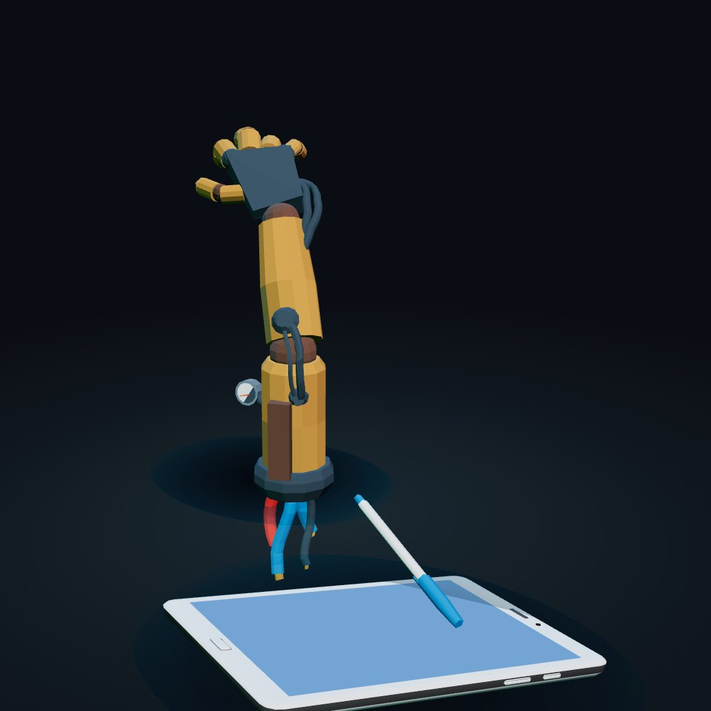
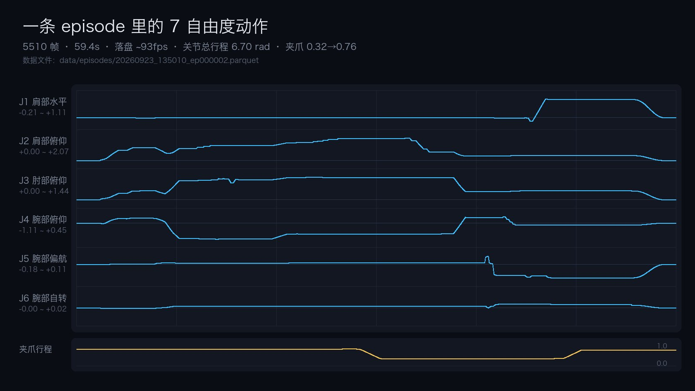
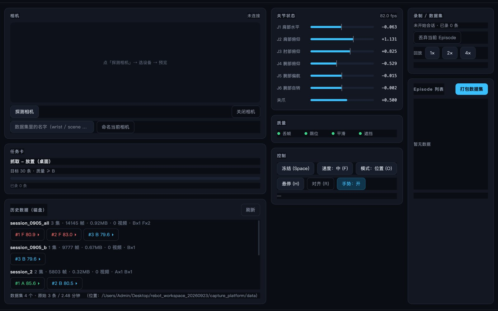
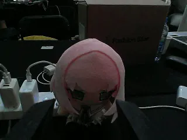

门槛高
主臂贵、要标定、关节方向与零点一堆坑；两个人一台机器，光把机械臂跑起来就耗掉一天。
→ 我们用数位板做绝对坐标输入，落笔即跟手
具身智能 · 遥操采集工作区
一块数位板控制 6 自由度机械臂 —— 落笔跟手、抬笔悬停； 采集盒自动录制、质检、打包成可训练数据集。 不需要主臂，不需要手工标定。 机械臂与相机跑在采集盒（Ubuntu）上，你在 Mac / 浏览器里操控 —— 用户端不用装 ROS，也不用碰 Ubuntu。
01 / 痛点
这些坑我们都在真机上踩过 —— 不是 PPT。
主臂贵、要标定、关节方向与零点一堆坑；两个人一台机器，光把机械臂跑起来就耗掉一天。
→ 我们用数位板做绝对坐标输入，落笔即跟手
ROS2 / Isaac Sim / LeRobot 默认都在 Ubuntu：装驱动、编译 workspace，光把环境跑通就耗掉一天。
→ 把环境收进采集盒：机械臂 + 相机跑在 Ubuntu 盒子上（Edge 镜像 + Docker）， 用户侧只要一个客户端或网页 —— Mac / Windows 都不用装 ROS，也不用碰 Ubuntu
各家用各自的臂、各自的相机、各自的时间戳，采出来无法直接互换训练。
→ 统一成 Parquet + 视频 + meta，附设备档案与质检结论
采集靠人盯，脏数据混进数据集，训练白跑。
→ 硬门 + A/B/C/F 评分卡，不合格的连数据集都进不去
02 / 采集流程
滚动看它从「笔」变成「轨迹」，再变成「数据集」。

拖拽可旋转
3D 模型（CC-BY 3.0，via Poly Pizza）：Robot Arm by Yali Izzo · Tablet / Pen by Poly by Google
① 输入层 · 数位板
② 采集层 · 控制与记录
③ 平台层 · 质检与打包
data/chunk-000/episode_*.parquet + 视频 + meta.jsonl03 / 架构
输入 → 采集 → 平台 → 商业。每一层都在仓库里有对应代码。
Mac / Windows / 浏览器
Ubuntu RT + Docker 镜像
B601-RS · 6 关节 + 夹爪
绝对坐标 + 落笔离合；手势（张开手/握拳）做夹爪行程兜底。
100Hz 控制环把笔动作变成 MIT 指令，同时落盘关节/力矩/笔压。
Parquet + 视频 + meta（LeRobot 风格），一条命令回放复现。
带设备档案、质量分、授权字段的数据包 —— 卖工具，也卖标准。
继续滚动 → 穿过下一层
04 / 质量门
只有过了硬门的 episode 才能进数据集 —— 拖起来试试，松手会有惯性。
提示：把方块拖进右侧的「datasets/」框 —— 等级 A/B 的会被吸进去，F 级弹回来。
05 / 实测
下面每个数字都来自仓库里 data/ 下的真实文件。
| 落盘帧率 | 92.8 – 93.1 fps（控制环 100Hz） |
|---|---|
| 丢帧率 | 0.00%（上限 2%） |
| 限位占用 | 0.00%（上限 5%） |
| 最大时间跳变 | 14.5 – 17.7 ms（上限 50ms） |
| episode 时长 | 32 – 59 s（单条） |
| 数据集 | 4 个（7 条 episode） |
|---|---|
| 数据量 | 7 集 / 28,245 帧 |
| 成功标记 | 6 条成功 · 1 条失败留档 |
| 质量分 | 78.7 – 85.6（A×1 / B×4 / F×2） |
| 溯源 | MANIFEST.json + 每条 sha256 |
注：评分卡仍缺「运动覆盖」维度 —— 静止录制也可能拿高分， 已列入下方「边界」。上表是现状，不是结论。

data/episodes/20260923_135010（5510 帧 / 59.4s）；每个关节按自身范围缩放，否则小幅运动会被压成直线

data/
├── chunk-000/
│ └── episode_000001.parquet ← 关节/力矩/动作/笔压
├── videos/
│ └── observation.images.wrist/
│ └── episode_000001.mp4
└── meta/
├── info.json fps / features / frames
├── episodes.jsonl 每条：等级 · 分数 · 成功 · 时长
├── tasks.jsonl 语言指令
└── rebot_meta.json 设备档案 + 质检 + 授权字段
06 / 安全
我们被打断后失能掉落、切模式空窗下坠各出过一次，都改进了。
距零位 >0.05 rad 拒绝使能（不动、不失能）—— 先归零再起服务。
归零、走位、回放都用 10a³−15a⁴+6a⁵ 曲线，没有阶跃。
退出/Ctrl+C 先平滑归零再退出；失能只允许在 park 位附近。
任一路 >25 N·m 立即中止并原地保持；回放同样受保护。
安全盒接近边界按剩余空间成比例减速 —— 能贴边，不会越界。
0.4s 无笔输入视为抬笔；肘部软限位 1.5°，QD ≤ 1.0 rad/s。
07 / 边界
今天能演示的与还不能的，分清楚比吹得更响重要。
真机遥操采集 → 质检 → 打包 → 回放；7 电机 / 4 数据集可查
评分卡缺「运动覆盖」维度：静止录制也能拿高分（现有一条 A 级 episode 就是全静止的），需要补覆盖度/有效行程判据
训练链路（ACT 等）：仓库里只有数据与回放，没有训练代码
数据集是 LeRobot 风格，但未逐字段对齐 v3，需要转换器
多路同录（wrist + scene）：当前只录选中的那一路相机
自动成功判定（夹爪力/位置）、设备序列号与标定哈希签名
现有 6 条成功样本；单任务可用训练量需 ≥50 条